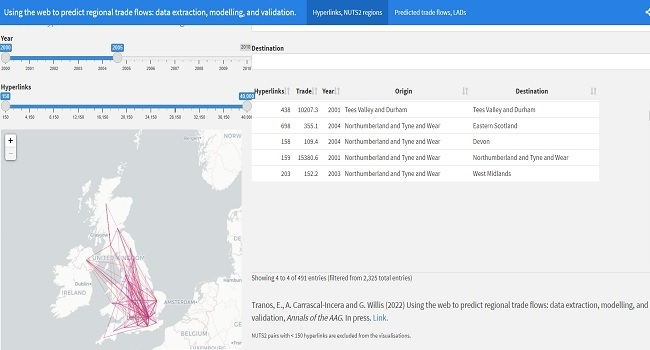
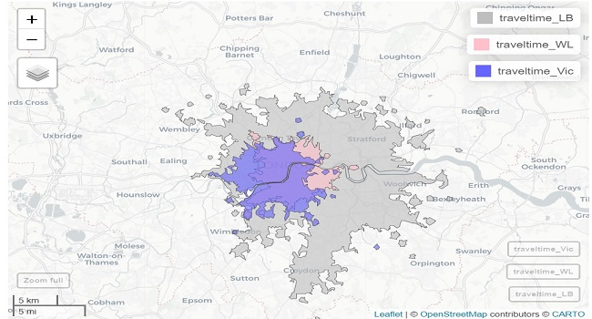
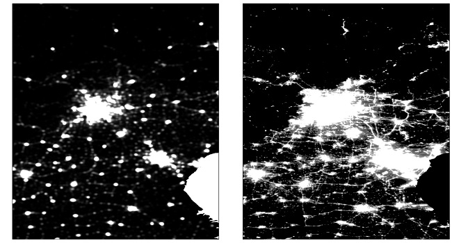
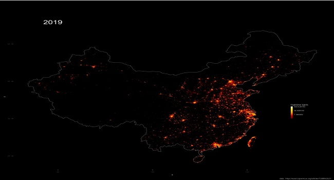
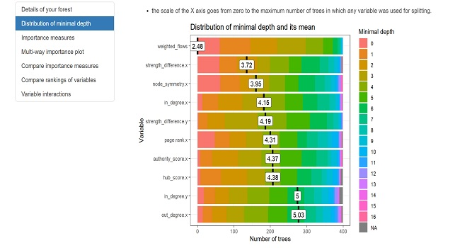
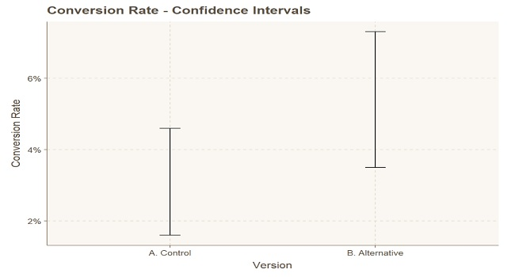
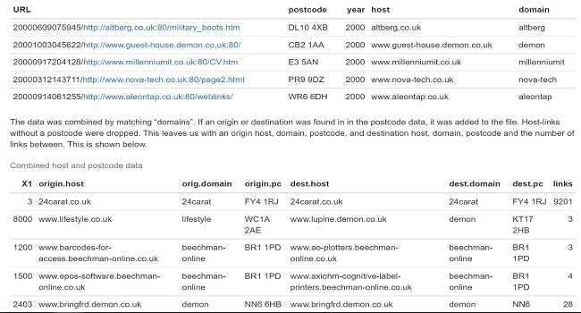

Full index
Thirteen projects kept because they answer a concrete question: interactive maps, satellite image processing, and econometric models in R and Python. The rest has been retired rather than kept around as padding.
Physics-based urban transit simulation modeling spline kinematics, UTM metric projections, NetworkX resilience analytics, and browser-based GTFS onboarding across global metro networks.
Automated venue scraping across 100+ London grassroots music venues, using pgvector semantic deduplication and local vision models for flyer parsing.
Spatial decay models estimating how commute distance to major London rail termini affects residential property valuations.
Network Analysis · PublishedModelling inter-regional trade flows from UK web hyperlink graphs. Validated against official ONS economic accounts and published in the Annals of the AAG.

Isochrone Modeling · AccessibilityMulti-modal transit catchments and commute-time isochrones mapped from major London rail and tube terminals.

Remote Sensing · Spatial KDEDelineating built-up urban boundaries by fusing nighttime satellite imagery with point-of-interest kernel density surfaces.

Remote Sensing · Time SeriesHarmonised 20-year satellite nighttime light time series tracking spatial growth and structural change across Chinese urban regions.

Spatial ML · Tree DiagnosticsMinimal depth distributions and split importance metrics across spatial random forest models predicting regional population change.

Transit Equity · GIS AnalysisWalkshed analysis and network coverage across Rhode Island public transit, measuring population within quarter-mile bus stop buffers.
Isochrone Surfaces · Spatial GISContinuous network drive-time surfaces and travel-time boundaries modelled statewide across Rhode Island.
Comparative Cartography · Web GISSynchronised side-by-side historical and contemporary spatial basemaps of Rhode Island with an interactive swipe divider.
Applied Statistics · InferenceControlled experimental split-testing workflow in R, evaluating conversion rate significance, power analysis, and hypothesis test boundaries.

ETL Pipeline · Data EngineeringSpatial join and postcode resolution pipeline matching JISC UK web domain archives with regional NUTS2 and LAD boundaries.
